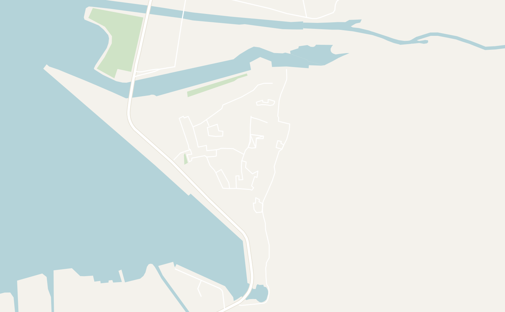
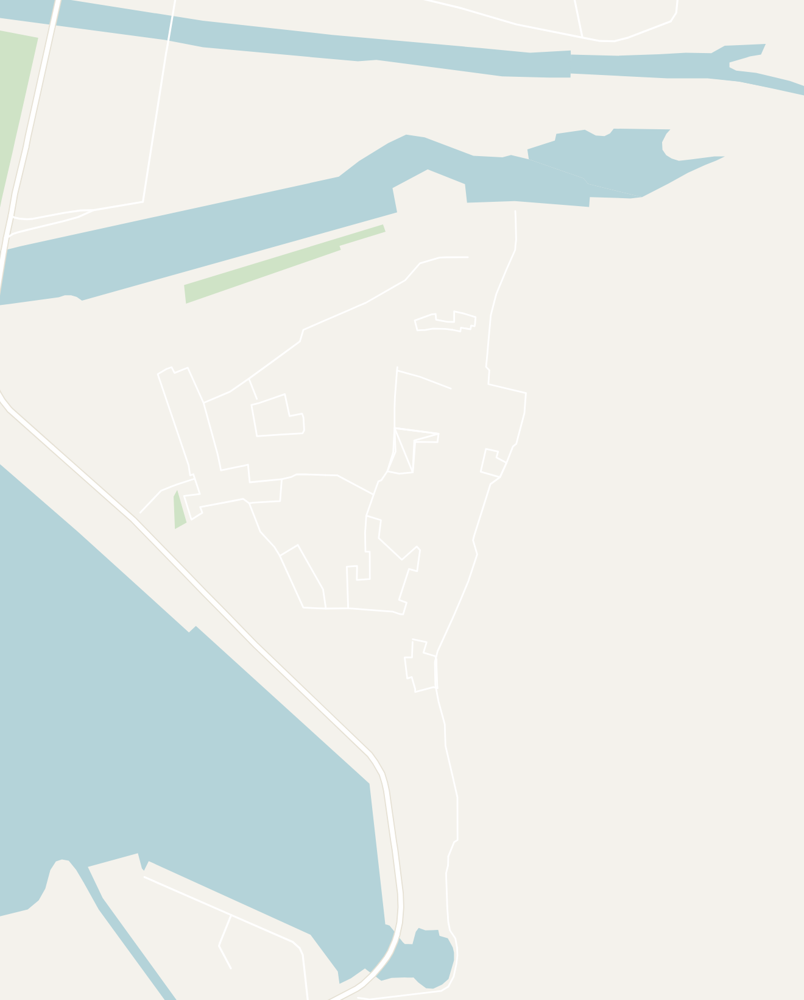

General
Montenegro is a tiny Balkan country on the Adriatic Sea. Located just south of Croatia, it feels like Croatia's quieter, cheaper and less-polished cousin. For how small it is, the country has one of the most dramatic changes in elevation between the towering mountain peaks in Durmitor National Park to the pristine waters of the Adriatic Coast. The highlight is the Bay of Kotor, a dramatic, fjord-like inlet ringed by mountains with a walled medieval old town.
The country is easy to tack onto a Croatia or Albania trip. The bus from Dubrovnik, Croatia or Shkodër, Albania only takes a few hours. I would recommend exploring the Bay of Kotor and adding on time to explore the rest of the country.
- Getting around — most people arrive by bus from Croatia or Albania. Book your tickets on traveling.com which has the most connections. You also can fly into the airport in the capital Podgorica or Tivat as well
- Local buses — they're available and connect the coastal towns, but are unreliable. Sometimes there are no actual bus stops (ask a local where to stand) and schedules are loose. For day trips, a boat tour or a taxi is far easier than deciphering the bus routes
- Money — Montenegro uses the Euro even though it isn't in the EU. It's noticeably cheaper than Croatia, but is starting to get more expensive as it gains in popularity
- Food — I found Montenegrin food to be very similar to Italian food with fresh fish, risotto and pasta everywhere. They also had a few Balkan classics like Cevapi and Burek
- Language — Montenegrin is a South Slavic language written in both the Latin and Cyrillic alphabets and mutually intelligible with Serbian. I had no problem getting around with English, especially in tourist towns like Kotor
- Safety — Montenegro felt very safe and easygoing throughout, day and night. No issues here at all
Kotor
2 days recommendedKotor is a historic town dating back to the 5th century, nestled in the very back of the Bay of Kotor, where the reflective water sits between steep grey mountains. Kotor has changed hands between many empires over the course of history, but shows notable influence from the Venetian Kingdoms which defines the architectural style in the walled old town.
I would suggest spending at least 2 days here: one to explore the old town and hike the fortress above and a boat tour around the bay on the second day.
- Kotor Old Town — a beautiful old town that takes 20 minutes to walk end-to-end. I would start at the main square by Cathedral of Saint Tryphon, wander the streets, climb on to the Kotor town walls to visit Kampana Tower and end at the North Gate, where a stream of clear, green-tinted water runs right alongside the wall
- On the main street, right outside the walls, there is the Kotor Food Market where you can sample local Montenegrin flavors
- Kotor is covered in friendly cats, so spot them all over town while you're at it!
- Hike up to the Castle of San Giovanni — a climb up a set of steep switchback stairs from the old town to an old fortress high above the bay. The fortress is a bit rundown and overgrown, but the view is unmatched
- If you're up for an adventure, go for sunrise: you beat both the crowds and the heat, catch the whole town lit up on the way, and get the scenic view straight down the bay. I set out around 5 AM and we nearly had it to ourselves
- Bay of Kotor boat tour — the best way to explore the Bay of Kotor. It starts in Old town and loops around the bay all the way to the Adriatic sea making a few amazing stops along the way. You can book the tour I did here
- Our Lady of the Rocks — the iconic light blue domed church built on a man-made island in the bay. The boat docks so you can walk around the little church and its stairs. The neighboring island is home to Saint George Catholic Monastery is also popular to visit, but was closed for construction when I visited
- Blue Cave — a small sea cave with startlingly bright blue water. The boat pulls up right outside and you can jump in and swim
- Austro-Hungarian submarine tunnels — your tour will likely stop by these submarine tunnels hidden in the mountainside. We visited one featured in a James Bond film that was hidden behind a fake rock face. It is a cool, quick stop
- Konoba Roma — a restaurant located right by the town square. I ended up eating here twice: a Montenegrin breakfast (eggs, tomato, cheese, bread) and a carbonara later
- Cesare Old Town Restaurant — a decent sit-down spot (with bad online reviews). I had the Montenegrin pasta (steak and pasta), an espresso and a cream cake to finish
- Old Town Hostel Kotor — a bare-bones hostel, located right in the middle of Old Town Kotor. They also host a boat party and BBQ everyday


Double-tap to open in Google Maps
Perast
Half-day trip from KotorPerast is a tiny, beautiful town strung along the water about 25 minutes up the bay from Kotor. Take the local bus from Kotor. There is no official bus stop so ask locals where to stand along the road. The bus along the coast runs every hour, but it is up to an hour late (so be prepared to wait)! The town of Perast is incredibly charming and where rich tourists stay in the area.
- Wander the waterfront — the docks double as restaurant seating and the whole promenade is built for a nice lunch by the water. You can also stroll around and get ice cream, do a wine tasting and watch the sunset on a bench
- Climb to the Fort of the Holy Cross — a fort above town that is totally abandoned, with overgrown trails and little upkeep. It was a fun little adventure and the views back over the bay are worth the scramble
- Our Lady of the Rocks — small boats run out to the island church from the Perast waterfront if you didn't already stop there on a bay tour
Other Places to Consider
I only had a couple of days in the Bay of Kotor, so I'd definitely want to spend more time in Montenegro. Here were some places recommended by other travelers:
- Budva — a seaside town with cliffs towering above the ocean and the country's main beach and nightlife destination
- Sveti Stefan — the famous fortified islet resort just 15 minutes south of Budva. Iconic to photograph from the shore or hill nearby even if you're not staying at the (very pricey) hotel
- Durmitor National Park — Montenegro's rugged north: the Black Lake, the Tara Canyon and world-class hiking. A full day or more from the coast, but the country's best mountain scenery. My friends really enjoyed the hut-to-hut hiking here
- Lovćen National Park — the mountain directly above Kotor, with the Njegoš Mausoleum at the top and huge views back down over the bay. Reachable by the switchback road out of Kotor
- Podgorica — the capital and main airport hub. I went through here for a flight, but heard it wasn't the prettiest city or really place to spend time as a tourist